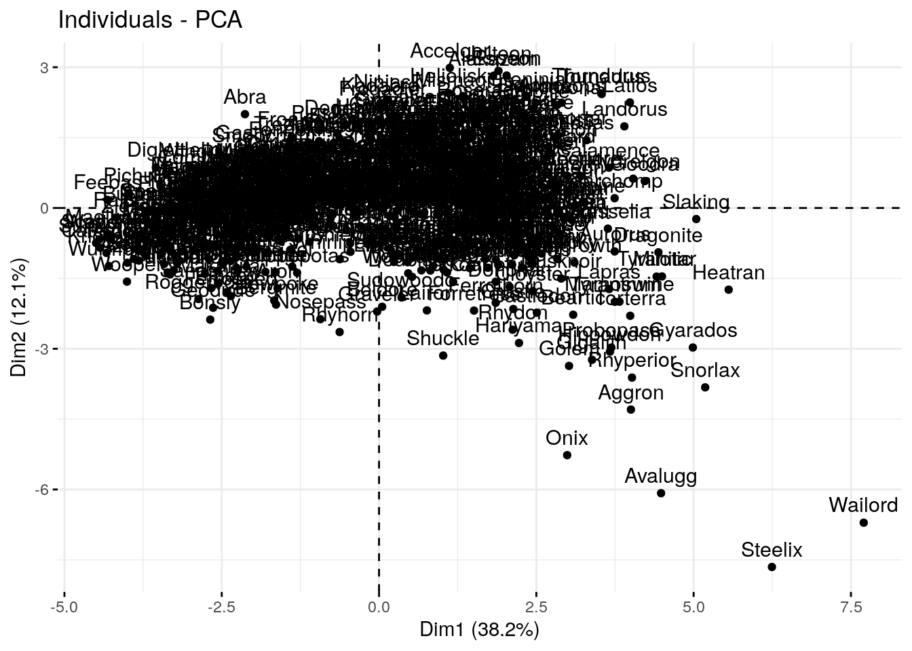
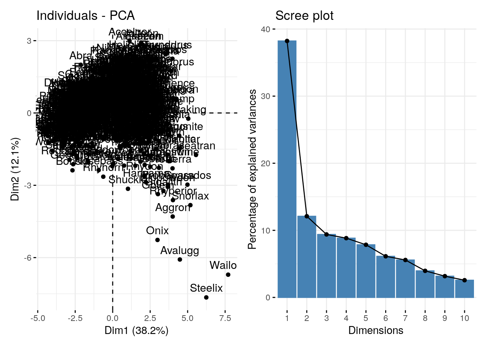
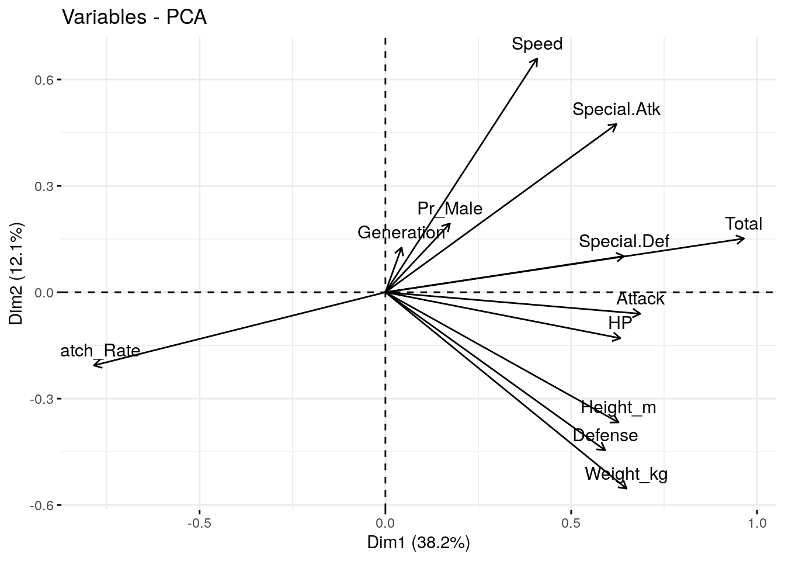
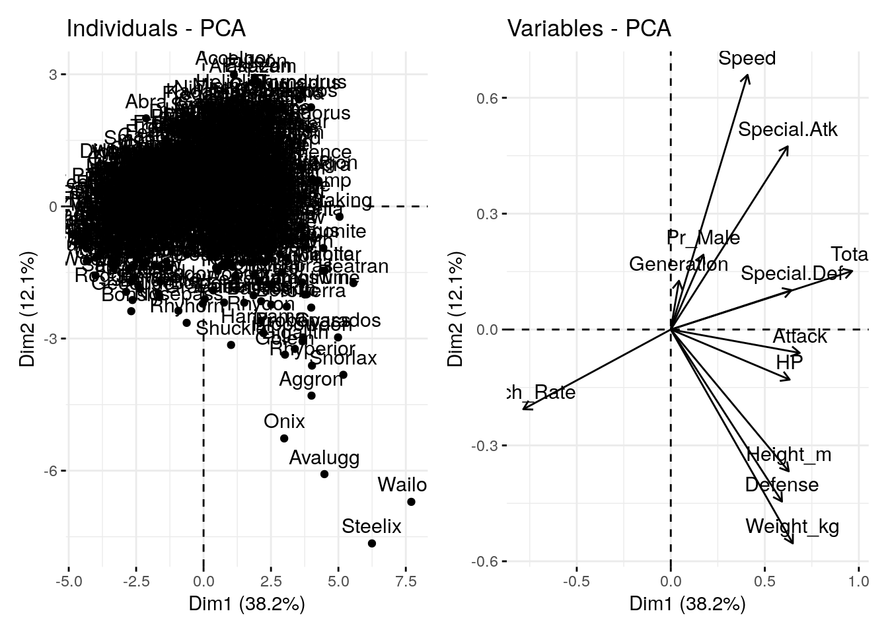
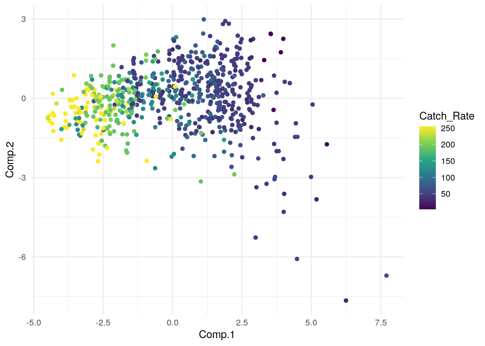
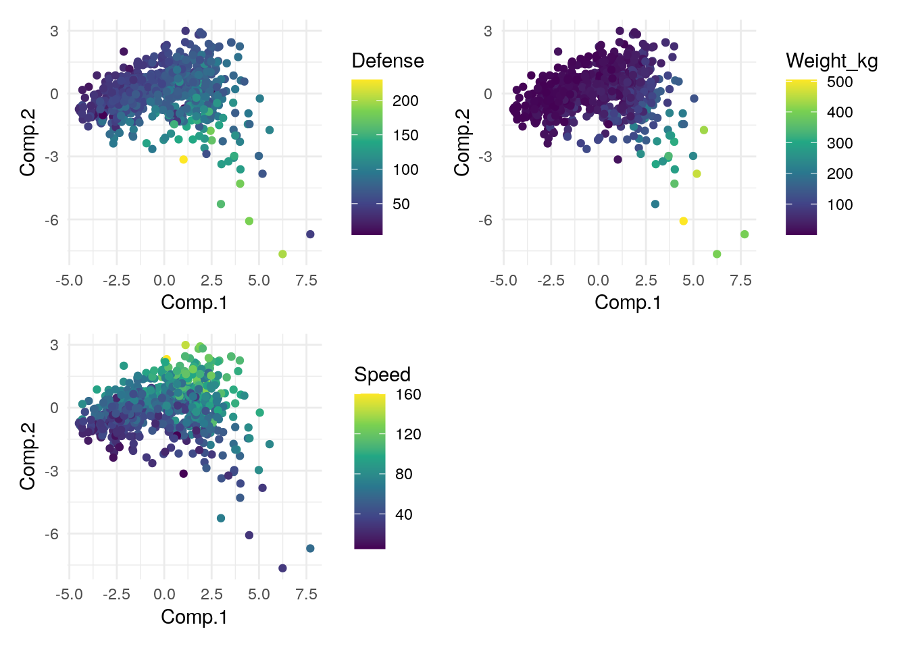

library(tidyverse)
poke = read_csv("./DataSets/pokemon.csv")A practical guide to principal component analysis
The following is a short primer I made for the IBS519 course at Emory in the Fall of 2023 to introduce first-year bioscience students to PCA for use in their research
Part 1: PCA Background
I wanna be the very best…
At the beginning of this course we learned how simple data visualization can help to uncover broader structures within data by plotting relationships between individual variables (or features) one at a time.
Now we are going to to VERY QUICKLY cover another technique that is commonly used to find structure in large, complex, multi-variable datasets:
Principal component analysis
Load Data
To do so let’s bring back our friends….the Pokemon…and all of their stats to see if we can make any new conclusions about them using PCA.
Principal component analysis is a dimensional reduction technique that creates NEW variables (principal components) which:
Are not correlated with each other
Try to capture as much of the variance of the data as possible
PCA is often useful when you have LOTS of variables, some of which may be correlated with each other, and where interpretation of each variable/feature individually would take too much time.
Prepare Data
The following is required to successfully perform PCA:
Data must be numeric (no discrete or categorical data)
Each variable should be on the same scale and ideally centered at 0
Must not contain NA values
Let’s walk through preparing our data for each of these criteria:
poke_num <- poke %>% select_if(is.numeric) %>%
select(-Number) %>% #Num is just an index variable so we don't want to use it
mutate(Name=poke$Name)
#^Select numeric values only
poke_num <- drop_na(poke_num) %>%
column_to_rownames(var="Name")
#^Remove NAs & set rownames to pokemon Name
poke_num_scale <- apply(poke_num, 2, scale) %>% data.frame()
#^Transform our data to scale and center
rownames(poke_num_scale) <- rownames(poke_num)
#^Fix rownames
head(poke_num_scale) Total HP Attack Defense Special.Atk Special.Def
Bulbasaur -0.86464383 -0.8650069 -0.8562420 -0.6765372 -0.01480364 -0.04587956
Ivysaur 0.01702662 -0.2751045 -0.3932530 -0.1801456 0.55493009 0.55628964
Venusaur 1.23312378 0.5114319 0.3190376 0.5289851 1.31457507 1.35918191
Charmander -0.95585111 -1.1009678 -0.7493984 -0.8892764 -0.20471488 -0.64804876
Charmeleon 0.01702662 -0.3537582 -0.3220240 -0.3574283 0.55493009 -0.04587956
Charizard 1.32433107 0.4327782 0.3902667 0.3517024 1.65641531 0.75701271
Speed Generation Pr_Male Height_m Weight_kg Catch_Rate
Bulbasaur -0.70370909 -1.371074 1.608363 -0.38910342 -0.6078938 -0.8343086
Ivysaur -0.13830696 -1.371074 1.608363 -0.08879898 -0.5121877 -0.8343086
Venusaur 0.61556254 -1.371074 1.608363 1.00516717 0.8528015 -0.8343086
Charmander 0.05016042 -1.371074 1.608363 -0.49635500 -0.5827905 -0.8343086
Charmeleon 0.61556254 -1.371074 1.608363 0.01845260 -0.4180505 -0.8343086
Charizard 1.36943205 -1.371074 1.608363 0.67268726 0.7037510 -0.8343086summary(poke$HP) Min. 1st Qu. Median Mean 3rd Qu. Max.
1.00 50.00 65.00 68.38 80.00 255.00 summary(poke$Attack) Min. 1st Qu. Median Mean 3rd Qu. Max.
5.00 53.00 74.00 75.01 95.00 165.00 summary(poke_num_scale$HP) Min. 1st Qu. Median Mean 3rd Qu. Max.
-2.24145 -0.66837 -0.07847 0.00000 0.44261 7.39363 summary(poke_num_scale$Attack) Min. 1st Qu. Median Mean 3rd Qu. Max.
-2.4233 -0.7494 -0.1083 0.0000 0.6040 3.2750 Notice how both variables (HP & Attack) now have a mean centered at 0 and relatively similar ranges/scales
Perform PCA & Visualize
Now our data is prepared for PCA. There are many different functions that have been created to help perform PCA in R, each with slightly different attributes. Try asking your favorite GPT model/chatbot to list out all of them sometime.
Today, we will use the princomp() function to do the actual PCA
pca <- princomp(poke_num_scale)The results of the PCA are now stored in the object named pca. Let’s take a look at what’s inside it.
summary(pca)Importance of components:
Comp.1 Comp.2 Comp.3 Comp.4 Comp.5
Standard deviation 2.1400310 1.2039366 1.06052524 1.02873685 0.96975628
Proportion of Variance 0.3822379 0.1209765 0.09387191 0.08832878 0.07849082
Cumulative Proportion 0.3822379 0.5032144 0.59708631 0.68541509 0.76390591
Comp.6 Comp.7 Comp.8 Comp.9 Comp.10
Standard deviation 0.85705152 0.81755855 0.68900108 0.6161671 0.55440766
Proportion of Variance 0.06130664 0.05578679 0.03962173 0.0316877 0.02565382
Cumulative Proportion 0.82521255 0.88099934 0.92062107 0.9523088 0.97796259
Comp.11 Comp.12
Standard deviation 0.51384660 0
Proportion of Variance 0.02203741 0
Cumulative Proportion 1.00000000 1We can also visualize the results. Let’s use a few functions from the “factoextra” package which are designed specifically for visualzing the results of the princomp function.
library(factoextra)
library(patchwork)
p1 <- fviz_pca_ind(pca)
p2 <- fviz_eig(pca)
p3 <- fviz_pca_var(pca)
#fviz_pca_ind(pca, axes=c(2,3))
#fviz_pca_var(pca, axes=c(2,3))The individual scatter plot shows a scatter plot of the first two PCs for each row in our data (in this case each Pokemon)
p1
The scree/eigenvector plot shows the percentage of total variance explained by each PC
p1 + p2
The variable plot shows the “loadings” for each variable in the dataset. The direction of each vector indicates the direction of the variable’s maximum variance, and the length of the vector indicates the strength of the variable’s contribution to the components being plotted.
The angle between any two vectors approximates the correlation between the corresponding variables. A small angle implies a strong positive correlation, an angle around 90 degrees implies little or no correlation, and an angle greater than 90 degrees implies a negative correlation.
p3
p1 + p3
How do the PC results relate to our original data?
To answer this we need to combine our new variables (PCs) with our old data (without the scaling).
A little wrangling to do that:
pca_scores <- pca$scores %>%
data.frame() %>%
rownames_to_column(var="Name")
pca_plot <- left_join(pca_scores, poke, by="Name")And now we can use ggplot to visualize the scatter plot from before, along with the original categorical or numeric data
ggplot(pca_plot, aes(x=Comp.1, y=Comp.2)) + geom_point(aes(color=Catch_Rate)) + scale_color_viridis_c() + theme_minimal()
Code
g1 <- ggplot(pca_plot, aes(x=Comp.1, y=Comp.2)) + geom_point(aes(color=Defense)) + scale_color_viridis_c() + theme_minimal()
g2 <- ggplot(pca_plot, aes(x=Comp.1, y=Comp.2)) + geom_point(aes(color=Speed)) + scale_color_viridis_c() + theme_minimal()
g3 <- ggplot(pca_plot, aes(x=Comp.1, y=Comp.2)) + geom_point(aes(color=Weight_kg)) + scale_color_viridis_c() + theme_minimal()
g1 + g2 + g3 + plot_layout(nrow = 2, byrow = FALSE)
What have we learned about our data from this? Any big observations/conclusions?
Part 2: How PCA can help with modeling
Can we catch ’em all?
The PC variables we create can also be used when creating statistical models…with a few inherent benefits.
Let’s explore this by trying to predict the catch rate variable using other attributes about our pokemon.
Using a traditional variables
reg_model <- glm(Catch_Rate ~ Attack + Defense + Speed + Weight_kg + Height_m + HP + `Special Atk` + `Special Def`, data=pca_plot)
summary(reg_model)
Call:
glm(formula = Catch_Rate ~ Attack + Defense + Speed + Weight_kg +
Height_m + HP + `Special Atk` + `Special Def`, data = pca_plot)
Deviance Residuals:
Min 1Q Median 3Q Max
-146.674 -24.799 0.986 29.198 181.870
Coefficients:
Estimate Std. Error t value Pr(>|t|)
(Intercept) 327.68172 9.49092 34.526 < 2e-16 ***
Attack -0.56111 0.09617 -5.835 8.60e-09 ***
Defense -0.49376 0.09890 -4.992 7.71e-07 ***
Speed -0.52689 0.09158 -5.754 1.36e-08 ***
Weight_kg 0.04521 0.04756 0.951 0.342
Height_m -4.23261 2.96479 -1.428 0.154
HP -0.58127 0.09935 -5.851 7.83e-09 ***
`Special Atk` -0.59105 0.09532 -6.200 1.01e-09 ***
`Special Def` -0.48401 0.10762 -4.498 8.18e-06 ***
---
Signif. codes: 0 '***' 0.001 '**' 0.01 '*' 0.05 '.' 0.1 ' ' 1
(Dispersion parameter for gaussian family taken to be 2724.921)
Null deviance: 3602868 on 643 degrees of freedom
Residual deviance: 1730325 on 635 degrees of freedom
AIC: 6932.7
Number of Fisher Scoring iterations: 2Keep a note of the AIC value here. AIC stands for Akaike Information Criterion which is a measure used in statistics to assess how well a statistical model fits the data.
When comparing models LOWER AIC values are thought to indicate that a model is a relatively better fit for the data.
Using PCs
Now let’s try to do the same using our PCs
PCA_model <- glm(Catch_Rate ~ Comp.1 + Comp.2 + Comp.3 + Comp.4, data=pca_plot)
summary(PCA_model)
Call:
glm(formula = Catch_Rate ~ Comp.1 + Comp.2 + Comp.3 + Comp.4,
data = pca_plot)
Deviance Residuals:
Min 1Q Median 3Q Max
-120.709 -24.619 0.719 28.339 147.563
Coefficients:
Estimate Std. Error t value Pr(>|t|)
(Intercept) 107.4519 1.6847 63.783 < 2e-16 ***
Comp.1 -27.4426 0.7872 -34.861 < 2e-16 ***
Comp.2 -12.8318 1.3993 -9.170 < 2e-16 ***
Comp.3 8.9677 1.5885 5.645 2.48e-08 ***
Comp.4 1.6513 1.6376 1.008 0.314
---
Signif. codes: 0 '***' 0.001 '**' 0.01 '*' 0.05 '.' 0.1 ' ' 1
(Dispersion parameter for gaussian family taken to be 1827.718)
Null deviance: 3602868 on 643 degrees of freedom
Residual deviance: 1167912 on 639 degrees of freedom
AIC: 6671.5
Number of Fisher Scoring iterations: 2How do the two models compare ?
Which one would you use?
Potential benefits of using PCA in modeling:
Reducing dimensions of the data makes for a simpler model (less features) which is less likely to overfit data
PCA can be helpful in reducing noise since it retains the most significant principal components and discards the rest
PCA transforms correlated variables into a set of linearly uncorrelated components, which helps to mitigate the issues that arise from multicollinearity.
Take aways
PCA requires clean & numeric data set on roughly the same scale
The
princomp()function can be used to perfrom PCA in R. The factoextra package has some good visualization tools designed specifically to work with this function.Reducing the complexity of models using PCA can help to improve prediction ability
Resources to learn more
This was a very quick, practical guide to using PCA. In the same way that driving a car doesn’t require knowing how internal combustion engines work, you can use PCA without understanding the underlying mechanics. HOWEVER if you do so you better have a mechanic (aka statistician) on hand in case anything breaks down.
If you want to deepen your knowledge and learn more about how PCA works (including the math behind it) check out the following: